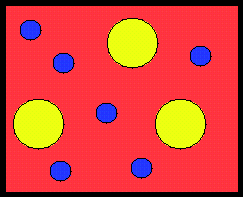

Mathematically, the problem of bounds and of extremal structures can be formulated as a nonconvex variational problem of minimization of the sum of energies/complimentary energies that a structure stores under different loadings. We have now a pretty detailed picture of structures of two-phase conducting and elastic materials, but the best structures of multiphase composites are mainly unknown. I am working on this extremely interesting and knotty problem. The difference between two-phase and multi-phase optimal structures is huge. It is similar to the difference between the black and white and the color TV.
The following picture shows the variety of the topology of optimal isotropic conducting two-dimensional three materials structure. Note the optimal topology of two-material mixtures us pretty clear: "good" material outside, "bad" material inside inclusions.
|  |  |
| Large volume fraction of the best material, the swiss cheese topology (Milton, 1986) | Small volume fraction of the best material; this material localizes inside the inclusion to compensate the properties of the worst material (Cherkaev, 1998) |
 composites
Back to the research page
composites
Back to the research page